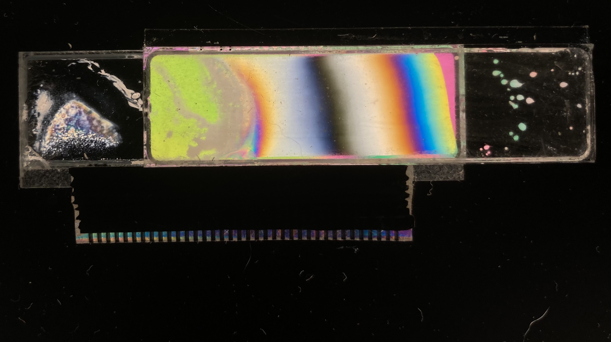
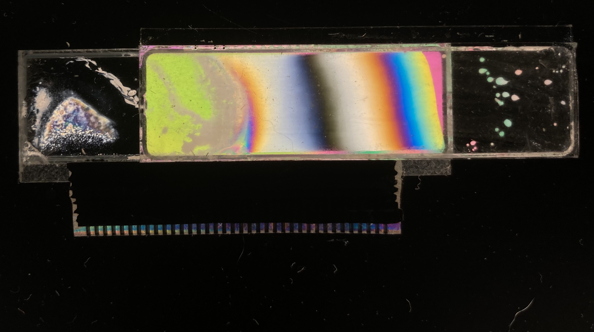
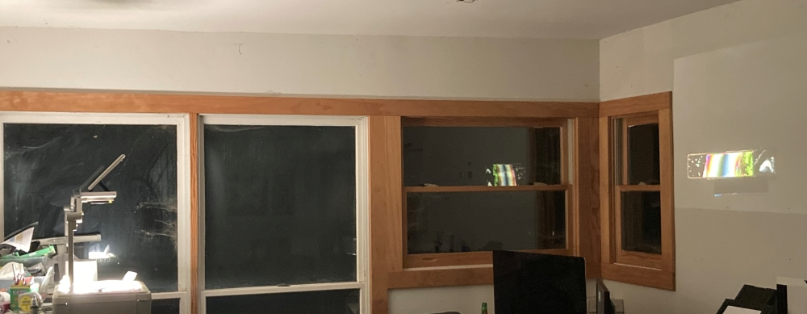
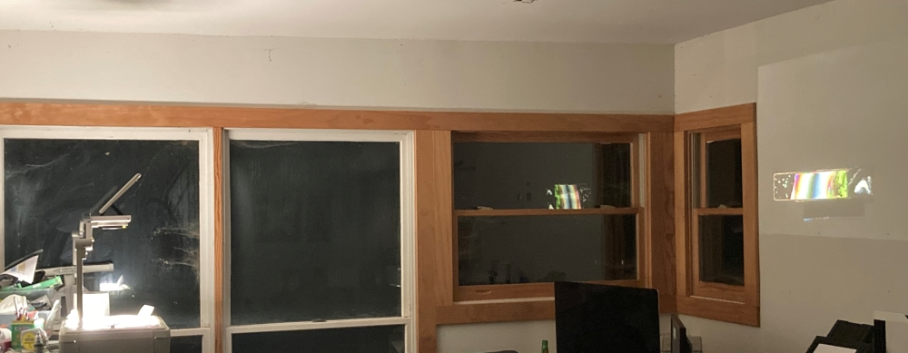
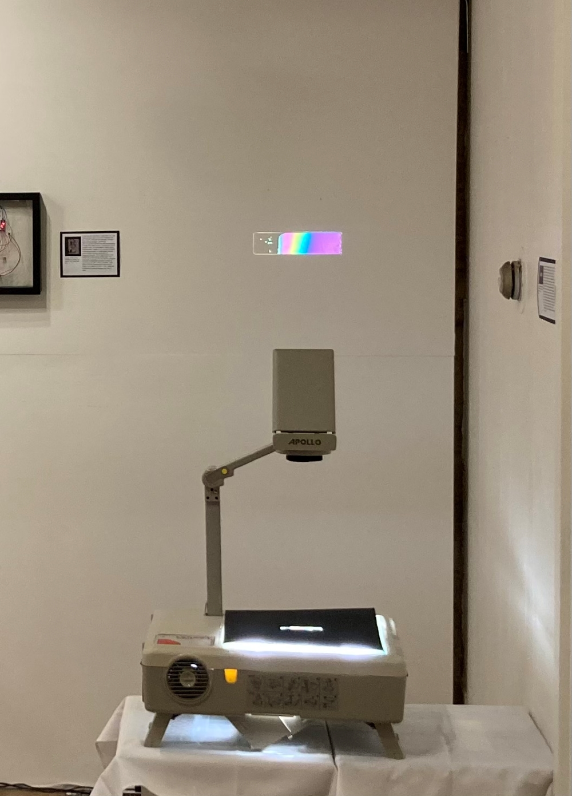
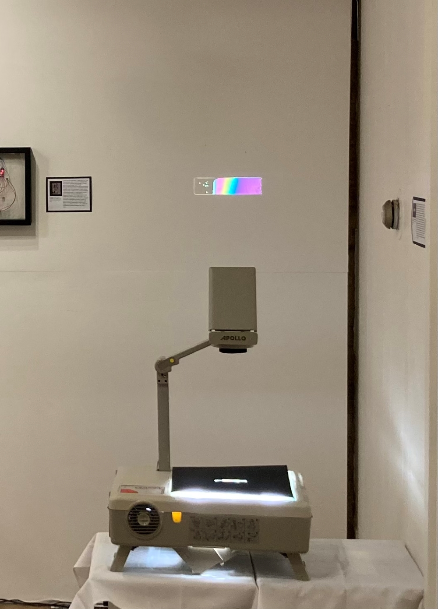
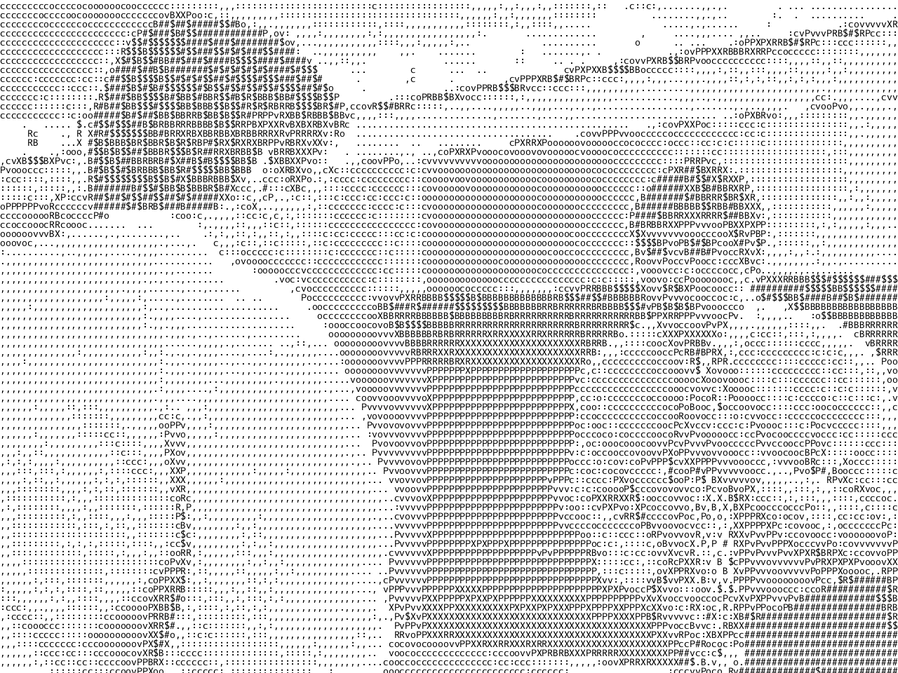
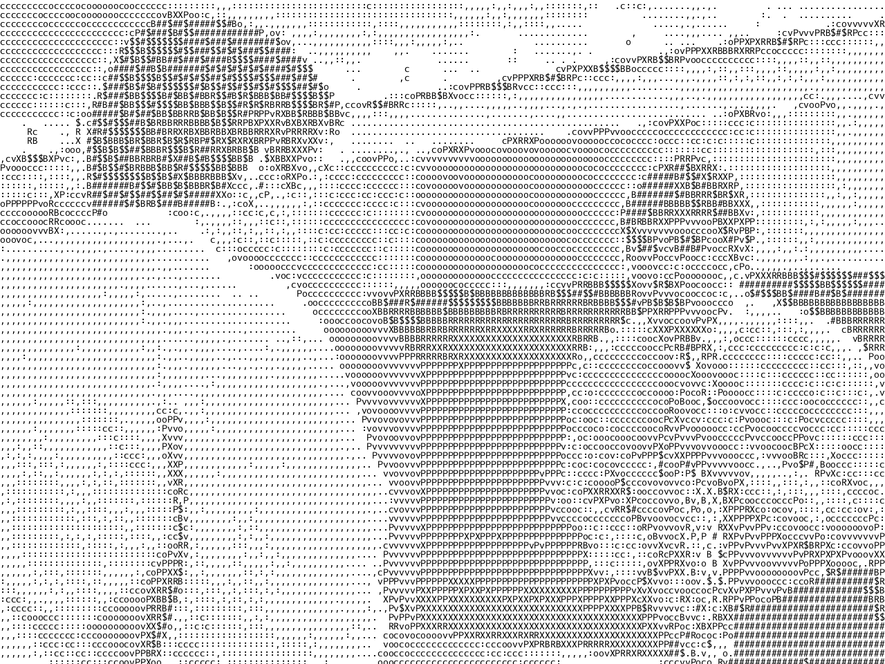

cursor (copperplate etching) 2023


cursor copperplate etching 2023
Cursor was the second plate I ever worked on, but it was the last one that I finished.
The project started, without my knowledge, when I cut upwards of a hundred tiny paper arrows meant to resemble the ubiquitous mouse cursor icon that we see nearly every time we use a computer. I wanted to have these because I felt that they were significant, and because seeing lots of them at once usually means that your computer is glitching out.
I rolled the paper cursors through a printing press to imprint their silhouette on my plate through a soft ground. I had to go back and trace their outlines later to make them visible in print.
Lastly, I added the lettering through a mix of drypoint etching and deep etching, resulting in an open bite.
facefall (self-portrait) acrylic gouache on bristol 2022

facefall (self-portrait) acrylic gouache on bristol 2022
Facefall was my final project for a color theory class.
In class, we had a little photoshoot for our self-portraits, and none of the photos taken of me were any good. I decided to use the worst photo of the bunch and ended up going back to an old code project to mess with it.
The program takes all pixels above a certain brightness and shifts them upwards, letting the pixels above fall down below. It tends to behead (white) people because their skin is usually brighter than their clothes.
At the time that I made this, I hated having my picture taken, let alone having to spend hours slaving over a monument to my own face. I had gone through every option available to me in a self-portrait setting to avoid drawing my own face. This was no different. It's still fun to look back on works like this now though.

liquid crystal projector, broken screens, polarized film (installation) 2021
 

 

 

liquid crystal projector, broken screens, polarized film (installation) 2021
Liquid crystal is an installation piece done for my senior IB art show at a local gallery.
This work stemmed from my interest in the patterns and ripples that would appear when you squished the screen of your calculator or laptop screen. I did a lot of research into the technology behind these screens, after I had already taken apart several of them with no knowledge of how they worked.
The magic ingredient of these screens is called liquid crystal, and it works to bend the light between two sheets of polarized film. In this way, it blocks light from coming through specific areas of the screen, allowing images and numbers to be displayed.
Each piece of the work was sourced from sellers online. The projector was from a father on Craigslist, who's daughter used to use it to project sketches for her murals. The screens were from a lot of ten calculators labelled as "for parts" on eBay, even though all of them still worked, they were just missing their batteries.
I chose this type of projector because it meant that I could have the physical screen in the gallery alongside a dynamic larger representation of itself.
You may notice that the projected image is different in nearly all the photos I have, and that is because the projector emits enough heat to change the viscosity of the liquid crystal, affecting the image. In the gallery, the projector is off until someone comes up and presses the button to turn it on. Depending on how recently it was used and for how long, the spectator will see a different image.

ascii copperplate etching 2023


 

ascii copperplate etching 2023
blah blah blah blah blah blah blah blah blah blah blah blah blah blah blah blah blah blah blah blah blah blah blah blah blah blah blah blah blah blah blah blah blah blah blah blah blah blah blah blah blah blah blah blah blah blah blah blah blah blah blah blah blah blah blah blah blah blah blah blah blah blah blah blah blah blah blah blah blah blah blah blah blah blah blah blah blah blah blah blah blah blah blah blah blah blah blah blah blah blah